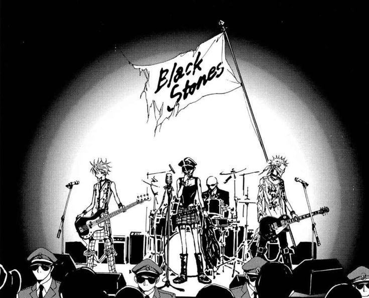
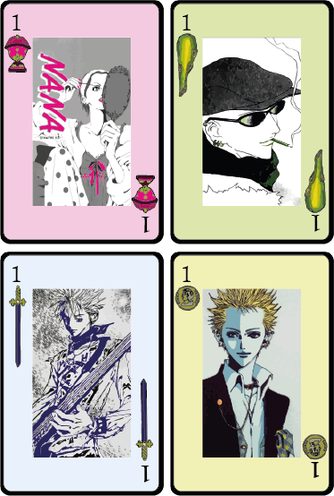
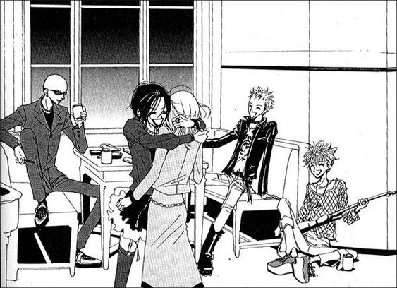

Sobre el proyecto y cómo ser tan cool
En primer lugar, quería rescatar esas páginas hechas por chicas y chicos entusiastas sobre un tema particular, que se dedicaban a hacer páginas web al respecto, durante el año 2008 aproxidamadamente. En mi caso, NANA es una serie que me acompaña hace mucho y, como no tiene los suficientes sitios online para expresar el fanatismo, decidí que es exactamente lo que la serie necesita
En segundo lugar, hay mucho material creado por mì, como es el caso de las cartas de NANA, ya que en internet no existían (aparentemente); casi todas las fotos son sacadas de mi buenísimo amigo Pinterest y, algunas, fueron reencuadradas por su servidora.
Por último, me gustaría agradecerle a mis buenos amigos, por dejarme acosarlos para que prueben el programa; al verificador de código, por ser siempre tan certero; a mi familia, que me aguantaron cada vez que yo no contestaba y me obligaban a comer cuando me olvidaba por estár discutiendo con JavaScript; a mi amigo Pedro, por pasarme su trabajo, del cual no pude sacar ni dos líneas de código pero me inspiró la estética; y al más hermoso de todos los tiempos, CharGPT, sin cuyo apoyo incondicional y agradable trato este proyecto sería mil veces más inútil y feo.
Este proyecto llevó dos semanas en desarrollarse (y aún así no anda todo, quién lo diría), por lo que creé un repositorio para ir controlando mis progresos: Repositorio completo del proyecto